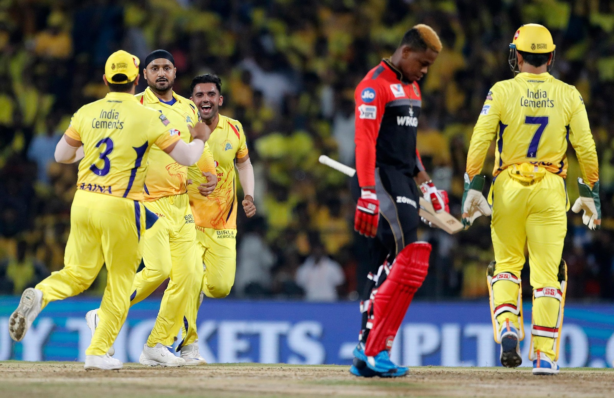

!DOCTYPE html>
IPL KINGDOM
Welcome to IPL

Internal link
Mail ipl
Contact ipl teams
The Indian Premier League (IPL) is a professional Twenty20 cricket league in India contested during March or April and May of every year by eight teams representing eight different cities in India.[3] The league was founded by the Board of Control for Cricket in India (BCCI) in 2008. IPL has an exclusive window in ICC Future Tours Programme.[4]
There have been twelve seasons of the IPL tournament
On 13 September 2007, the BCCI announced the launch of a franchise-base
- list of IPL
- CSK
- MI
- RCB
- KXIP
- RR
- RPS
- GL
- DC
- semi finalists
- finalists
- CSK
- MI
Dhoni batting
Personal Information
Born Jul 07, 1981 (38 years) Birth Place Ranchi, Bihar (now Jharkhand) Height 5 ft 11 in (180 cm) Role WK-Batsman Batting Style Right Handed Bat Bowling Style Right-arm medium
dhoni stumping
MS Dhoni stumped for the first time since 2011 in ODIs
IPL
SEMI FINAL 1
|
SEMI FINAL 2 |
FINAL
|
CSK WON BY 18 RUNS |
MI WON BY 8 WICKETS
|
CSK WON IN SUPER OVER
|
link: link
link: link